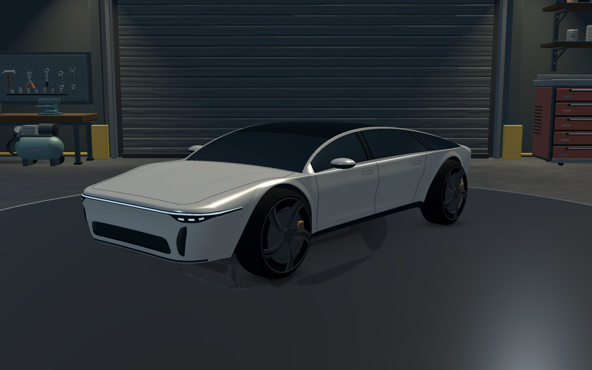
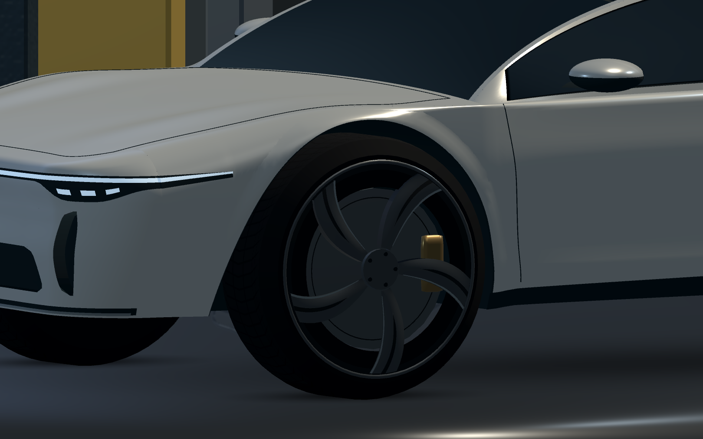
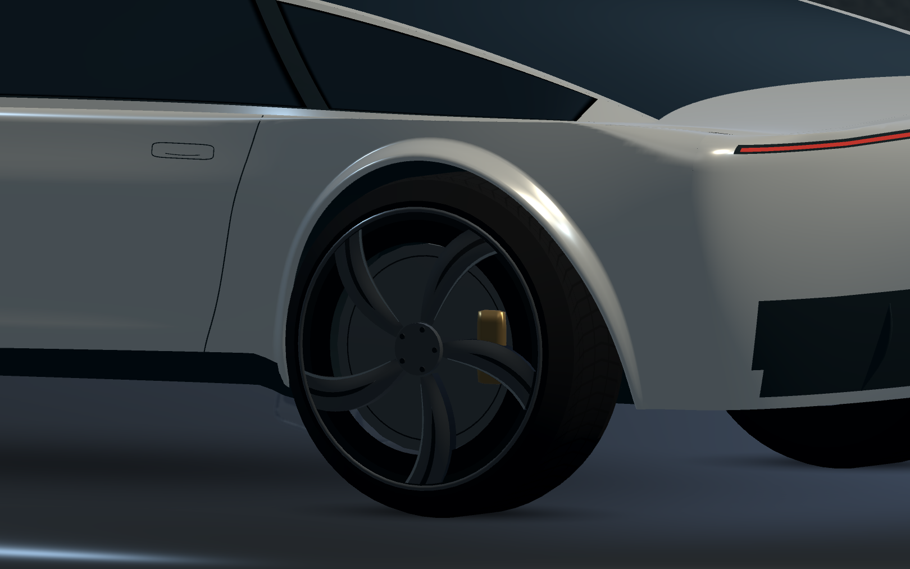
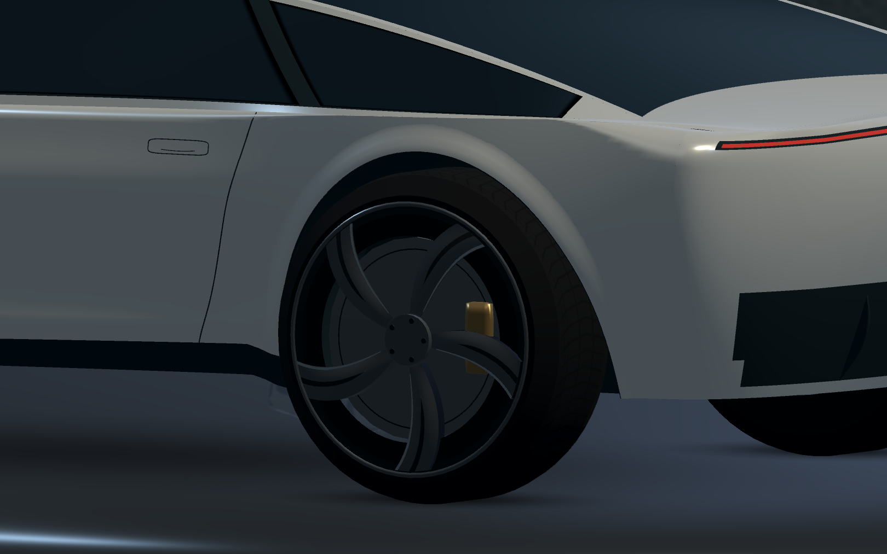
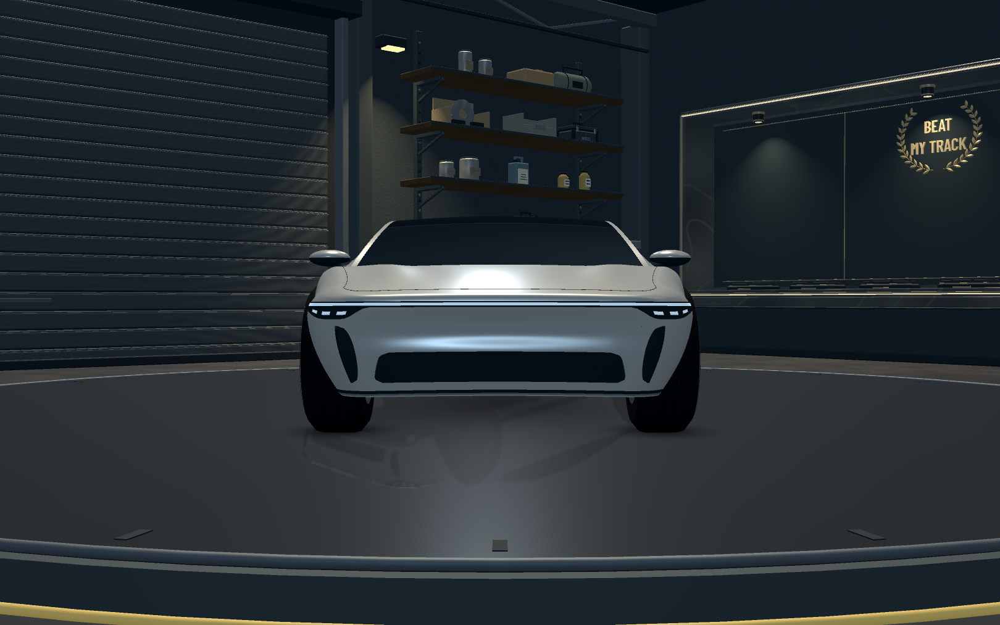
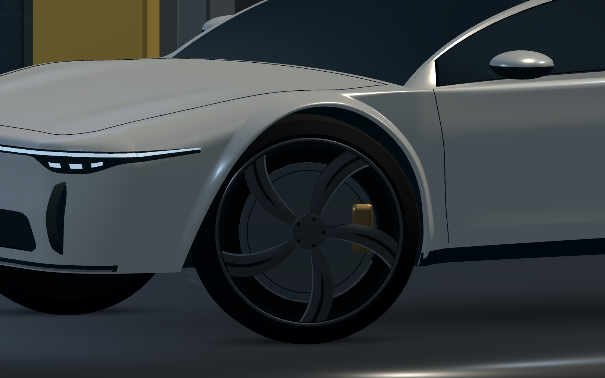
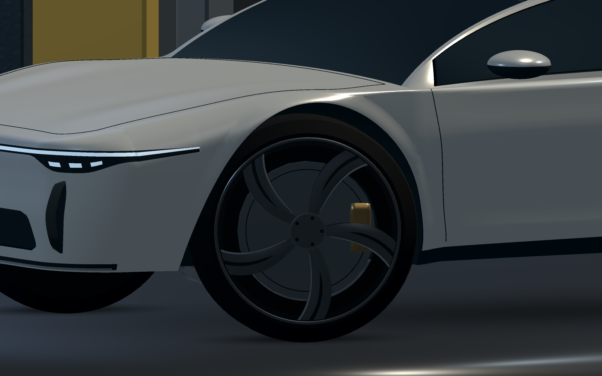

Volt: quieter wheel arches
Outward projection reduced from 4.8 cm to about 1.1 cm at world scale. A broader surface transition and thin dark return replace the raised silver rim. The front-wheel inset and enclosed wheelhouses remain.
Front Quarter
 Previous pronounced fenders
Previous pronounced fenders
Subtle body-integrated archesLeft Front Low
 Previous pronounced fenders
Previous pronounced fenders
Subtle body-integrated archesRear Low

Previous pronounced fenders
Subtle body-integrated archesFront
 Previous pronounced fenders
Previous pronounced fenders
Subtle body-integrated archesSteer Left

Previous pronounced fenders
Subtle body-integrated arches